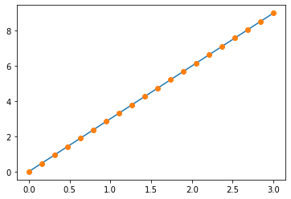
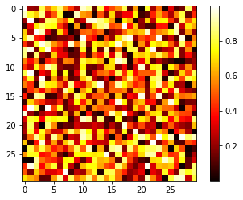
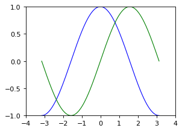
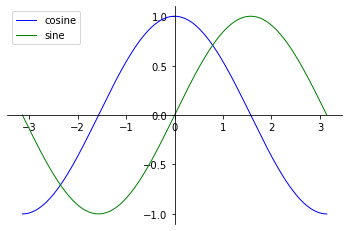
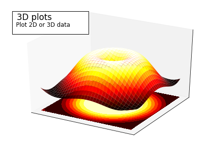
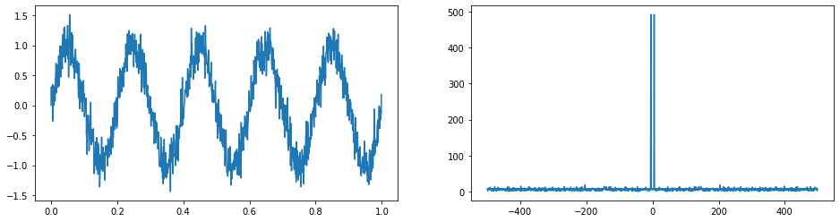
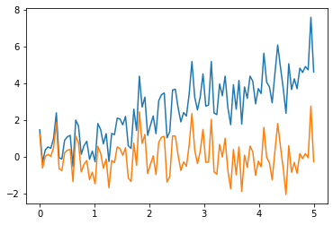
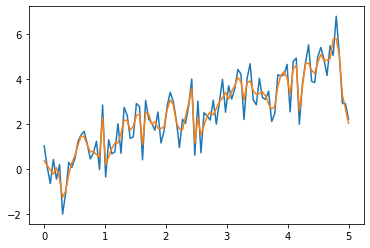
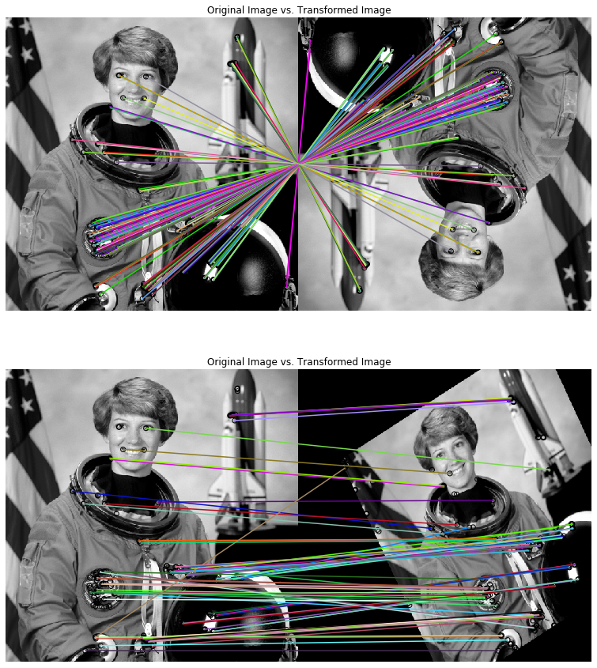
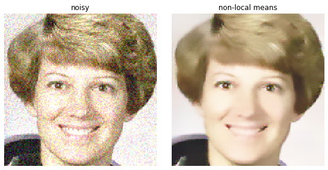

本节课介绍一下Python的基本语法，详细教程参考教程
1.1. Python 基础¶
数字信号处理中将要用到的Python库可以简单列举如下：
Numpy - 快速处理数据库
SciPy - 数值计算库，包含很多信号处理函数
Sympy - 符号运算库
Matplotlib - 绘制图表库
Mayavi - 三维可视化库
“工欲善其事，必先利器”，所以这里首先给大家介绍两款Python的集成开发环境（IDE）：
Hello World¶
使用Python，我们首先需要在PC上安装基本的编译环境，具体方法参考教程。
这里，我们推荐安装Anaconda环境，因为Anaconda环境可以允许多个版本的Python的共存，具体配置和安装方法参考官网。
Numpy库¶
Numpy可以通过命令conda install numpy来安装。安装完成后，在窗口输入：
[5]:
import numpy as np # 加载numpy库
a = np.array([0,1,2,3])
a
[5]:
array([0, 1, 2, 3])
这个数组可以表示很多物理量，例如离散时间的时刻点、语音序列、图像像素的灰度值、等等。
创建数组¶
[6]:
# 1维
a = np.array([0,1,2,3])
print(a.ndim,a.shape,len(a))
1 (4,) 4
[7]:
# 2维或者更高维
b = np.array([[0,1,2,3],[3,4,5,6]])
print (u'2x3矩阵：',b)
print (u'矩阵维度：',b.ndim,b.shape,len(b))
c = np.array([[[1],[2]],[[3],[4]]])
print (u'高维矩阵：',c)
print (u'矩阵维度：',c.shape)
2x3矩阵： [[0 1 2 3]
[3 4 5 6]]
矩阵维度： 2 (2, 4) 2
高维矩阵： [[[1]
[2]]
[[3]
[4]]]
矩阵维度： (2, 2, 1)
[8]:
# 创建复数数组
d = np.array([1+2j,3+4j,5+6j])
print (d)
print (d.dtype)
[1.+2.j 3.+4.j 5.+6.j]
complex128
更复杂的操作，请参考教程
基本运算¶
[9]:
# 逐元素运算
a = np.array([1,2,3,4])
print ('a=\t',a)
print ('a+1=\t',a+1)
print ('2**a=\t',2**a)
b = np.ones(4)+1
print ('b=\t',b)
print ('a*b=\t',a*b)
a= [1 2 3 4]
a+1= [2 3 4 5]
2**a= [ 2 4 8 16]
b= [2. 2. 2. 2.]
a*b= [2. 4. 6. 8.]
[10]:
# 矩阵相乘（逐元素）
c = np.ones((3,3))
print (u'逐元素乘积：\t',c*c)
# 矩阵相乘（非逐元素）
print (u'非逐元素乘积：\t',c.dot(c))
逐元素乘积： [[1. 1. 1.]
[1. 1. 1.]
[1. 1. 1.]]
非逐元素乘积： [[3. 3. 3.]
[3. 3. 3.]
[3. 3. 3.]]
Matplotlib库¶
可以通过命令conda install matplotlib来安装。安装完成后，在窗口输入：
[11]:
%matplotlib inline
#上一句命令是为了让图像显示在当前网页中
import matplotlib.pyplot as plt
[12]:
# 1维
x = np.linspace(0,3,20)
y = np.linspace(0,9,20)
plt.plot(x,y)
plt.plot(x,y,'o')
plt.show()

[13]:
# 2维
image = np.random.rand(30,30)
plt.imshow(image,cmap=plt.cm.hot)
plt.colorbar()
[13]:
<matplotlib.colorbar.Colorbar at 0x119f294a8>

[14]:
# 更高级的图表
import numpy as np
import matplotlib.pyplot as plt
# Create a figure of size 8x6 inches, 80 dots per inch
plt.figure(figsize=(4, 3), dpi=80)
# Create a new subplot from a grid of 1x1
plt.subplot(1, 1, 1)
X = np.linspace(-np.pi, np.pi, 256, endpoint=True)
C, S = np.cos(X), np.sin(X)
# Plot cosine with a blue continuous line of width 1 (pixels)
plt.plot(X, C, color="blue", linewidth=1.0, linestyle="-")
# Plot sine with a green continuous line of width 1 (pixels)
plt.plot(X, S, color="green", linewidth=1.0, linestyle="-")
# Set x limits
plt.xlim(-4.0, 4.0)
# Set x ticks
plt.xticks(np.linspace(-4, 4, 9, endpoint=True))
# Set y limits
plt.ylim(-1.0, 1.0)
# Set y ticks
plt.yticks(np.linspace(-1, 1, 5, endpoint=True))
# Save figure using 72 dots per inch
# plt.savefig("exercise_2.png", dpi=72)
# Show result on screen
plt.show()

[15]:
# 移动坐标轴
# Plot cosine with a blue continuous line of width 1 (pixels)
plt.plot(X, C, color="blue", linewidth=1.0, linestyle="-",label='cosine')
# Plot sine with a green continuous line of width 1 (pixels)
plt.plot(X, S, color="green", linewidth=1.0, linestyle="-",label='sine')
plt.yticks(np.linspace(-1, 1, 5, endpoint=True))
ax = plt.gca()
ax.spines['right'].set_color('none')
ax.spines['top'].set_color('none')
ax.xaxis.set_ticks_position('bottom')
ax.spines['bottom'].set_position(('data',0))
ax.yaxis.set_ticks_position('left')
ax.spines['left'].set_position(('data',0))
# 添加legend
plt.legend(loc='upper left')
plt.show()

[16]:
# 3D绘图
import numpy as np
import matplotlib.pyplot as plt
from mpl_toolkits.mplot3d import Axes3D
fig = plt.figure()
ax = Axes3D(fig)
X = np.arange(-4, 4, 0.25)
Y = np.arange(-4, 4, 0.25)
X, Y = np.meshgrid(X, Y)
R = np.sqrt(X ** 2 + Y ** 2)
Z = np.sin(R)
ax.plot_surface(X, Y, Z, rstride=1, cstride=1, cmap=plt.cm.hot)
ax.contourf(X, Y, Z, zdir='z', offset=-2, cmap=plt.cm.hot)
ax.set_zlim(-2, 2)
plt.xticks(())
plt.yticks(())
ax.set_zticks(())
ax.text2D(0.05, .93, " 3D plots \n",
horizontalalignment='left',
verticalalignment='top',
size='xx-large',
bbox=dict(facecolor='white', alpha=1.0),
transform=plt.gca().transAxes)
ax.text2D(0.05, .87, " Plot 2D or 3D data",
horizontalalignment='left',
verticalalignment='top',
size='large',
transform=plt.gca().transAxes)
plt.show()

Scipy库¶
[17]:
# FFT变换
from scipy import fftpack as fp
t= np.arange(0,1,0.001)
sig = np.sin(10*np.pi*t)
sig = sig + np.random.randn(sig.size)*0.2
sig_fft = fp.fft(sig)
freqs = fp.fftfreq(sig.size,d=0.001)
plt.figure(figsize=(16,4))
plt.subplot(1,2,1)
plt.plot(t,sig)
plt.subplot(1,2,2)
plt.plot(freqs,np.abs(sig_fft))
[17]:
[<matplotlib.lines.Line2D at 0x11a3c63c8>]

[18]:
# Signal Processing
t = np.linspace(0,5,100)
x = t + np.random.normal(size=100)
from scipy import signal
x_detrend = signal.detrend(x)
plt.plot(t,x)
plt.plot(t,x_detrend)
[18]:
[<matplotlib.lines.Line2D at 0x31a833470>]

[19]:
t = np.linspace(0,5,100)
x = t + np.random.normal(size=100)
from scipy import signal
x_detrend = signal.wiener(x)
plt.plot(t,x)
plt.plot(t,x_detrend)
[19]:
[<matplotlib.lines.Line2D at 0x11a168278>]

图像处理¶
Scipy中已经集成了一种图像处理的函数，misc
[20]:
from scipy import misc
face = misc.face(gray=True)
from scipy import ndimage
shifted_face = ndimage.shift(face,(50,50))
# plt.subplot(151)
plt.imshow(shifted_face,cmap=plt.cm.gray)
plt.axis('off')
[20]:
(-0.5, 1023.5, 767.5, -0.5)
[21]:
rotated_face = ndimage.rotate(face,30)
plt.imshow(rotated_face)
plt.axis('off')
[21]:
(-0.5, 1270.5, 1176.5, -0.5)
[22]:
# 图像处理
from skimage import data
from skimage import transform as tf
from skimage.feature import (match_descriptors, corner_harris,
corner_peaks, ORB, plot_matches)
from skimage.color import rgb2gray
import matplotlib.pyplot as plt
img1 = rgb2gray(data.astronaut())
img2 = tf.rotate(img1, 180)
tform = tf.AffineTransform(scale=(1.3, 1.1), rotation=0.5,
translation=(0, -200))
img3 = tf.warp(img1, tform)
descriptor_extractor = ORB(n_keypoints=200)
descriptor_extractor.detect_and_extract(img1)
keypoints1 = descriptor_extractor.keypoints
descriptors1 = descriptor_extractor.descriptors
descriptor_extractor.detect_and_extract(img2)
keypoints2 = descriptor_extractor.keypoints
descriptors2 = descriptor_extractor.descriptors
descriptor_extractor.detect_and_extract(img3)
keypoints3 = descriptor_extractor.keypoints
descriptors3 = descriptor_extractor.descriptors
matches12 = match_descriptors(descriptors1, descriptors2, cross_check=True)
matches13 = match_descriptors(descriptors1, descriptors3, cross_check=True)
# plt.figure(figsize=(6,15))
fig, ax = plt.subplots(nrows=2, ncols=1,figsize=(15,15))
plt.gray()
plot_matches(ax[0], img1, img2, keypoints1, keypoints2, matches12)
ax[0].axis('off')
ax[0].set_title("Original Image vs. Transformed Image")
plot_matches(ax[1], img1, img3, keypoints1, keypoints3, matches13)
ax[1].axis('off')
ax[1].set_title("Original Image vs. Transformed Image")
plt.show()

[23]:
import numpy as np
import matplotlib.pyplot as plt
from skimage import data, img_as_float
from skimage.restoration import denoise_nl_means
astro = img_as_float(data.astronaut())
astro = astro[30:180, 150:300]
noisy = astro + 0.3 * np.random.random(astro.shape)
noisy = np.clip(noisy, 0, 1)
denoise = denoise_nl_means(noisy, 7, 9, 0.08, multichannel=True)
fig, ax = plt.subplots(ncols=2, figsize=(8, 4), sharex=True, sharey=True)
# subplot_kw={'adjustable': 'box-forced'})
ax[0].imshow(noisy)
ax[0].axis('off')
ax[0].set_title('noisy')
ax[1].imshow(denoise)
ax[1].axis('off')
ax[1].set_title('non-local means')
fig.tight_layout()
plt.show()

[ ]: